前端开发那些事
正邪
@姚劲波：我们技术负责人发来：前几期《非你莫属》里提到了web前端工程师，现在行业里分得比较细，一般指利用（X）HTML/CSS/JavaScript/DOM/FLASH等各种技术进行产品的界面开发,后台开发语言熟悉最好，但一般仅需了解即可。。。不熟悉啊，所以那哥们我没有招到，看来得继续学习技术。有志前端同学别被我误导了。
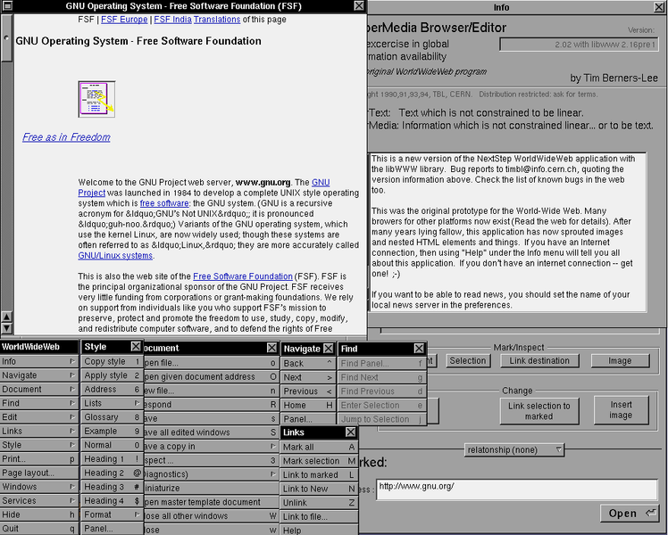
支持IMG标签
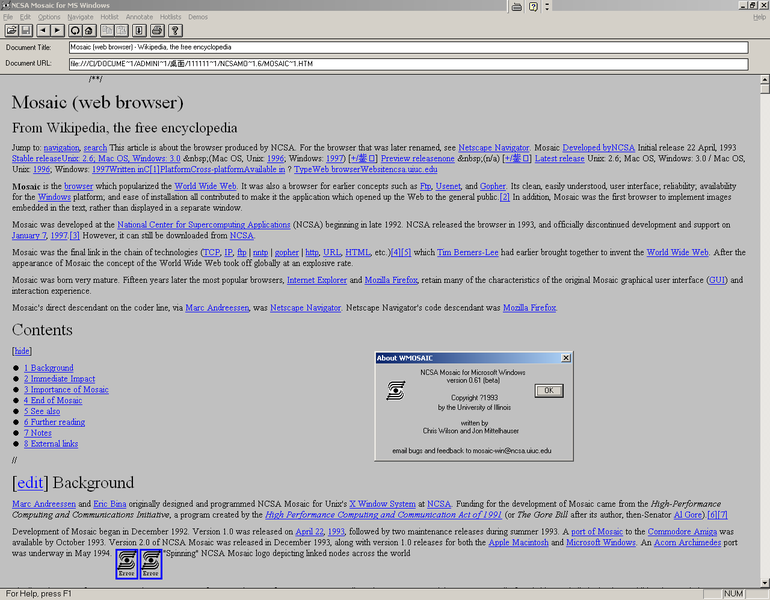

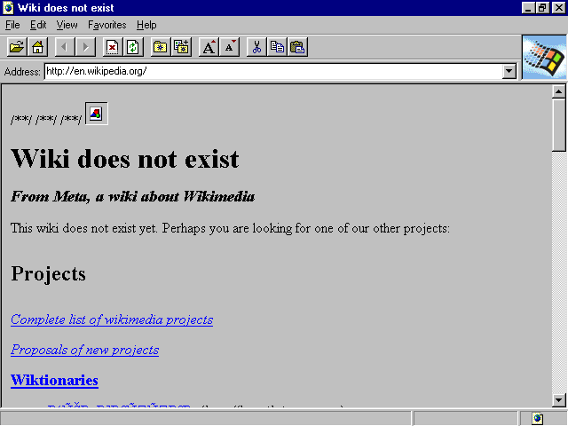
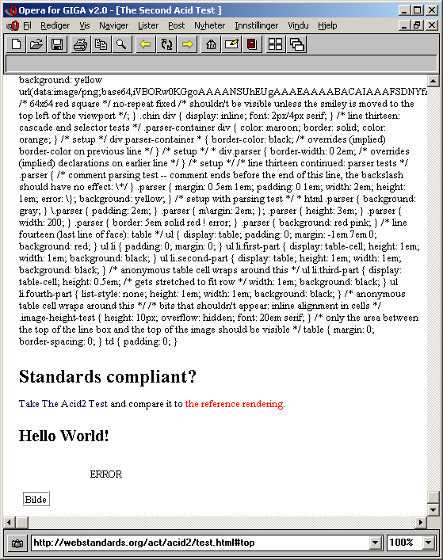
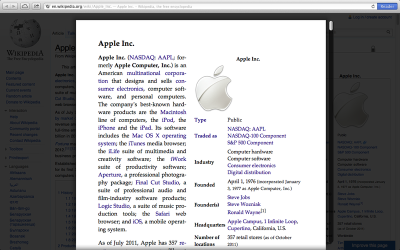
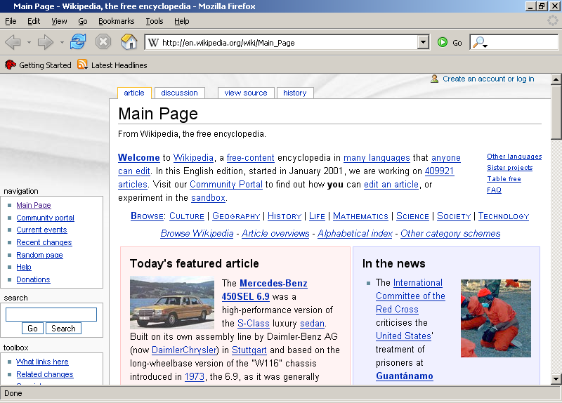
包括HTML、CSS和JavaScript的一套技术组合。
希望能够减少浏览器对于需要插件的丰富性网络应用服务（plug-in-based rich internet application，RIA)，如Adobe Flash、Microsoft Silverlight，与Oracle JavaFX的需求，并且提供更多能有效增强网络应用的标准集。
互联网上用于构造和展现内容的一个标记语言。
还在开发当中。目的是支持多媒体；增强代码可读性；便于机器理解。
HTML的新版，拥有新的元素，属性和行为。
是一个很大的技术集合，帮助构建强大的网站和应用。
浏览器中那些amazing的东西就是
HTML5


Loading...
WebGL Water
Made by Evan Wallace
Interactions:
- Draw on the water to make ripples
- Drag the background to rotate the camera
- Press S to pause and unpause
- Drag the sphere to move it around
- Press the D key to set the light direction
- Press the G key to toggle gravity
Features:
- Raytraced reflections and refractions
- Analytic ambient occlusion
- Heightfield water simulation *
- Soft shadows
- Caustics **
* requires the OES_texture_float extension
** requires the OES_standard_derivatives extension
Tile texture from zooboing on Flickr
- HTML1
- HTML2
- CSS1 + JavaScript
- HTML4
- CSS2
- AJAX
- HTML5
HTML5
意味着一个时代的到来
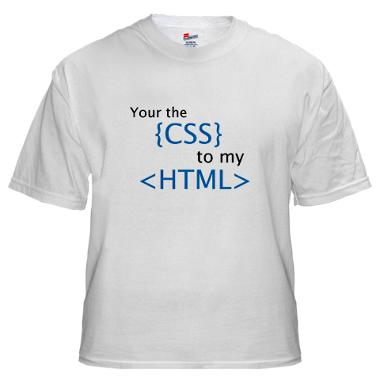
github语言排行榜
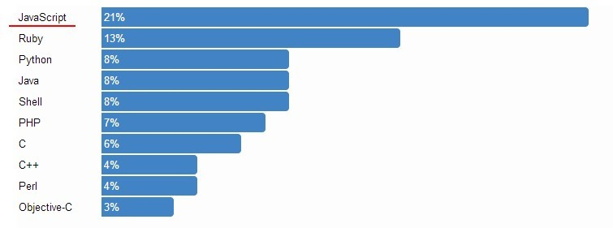
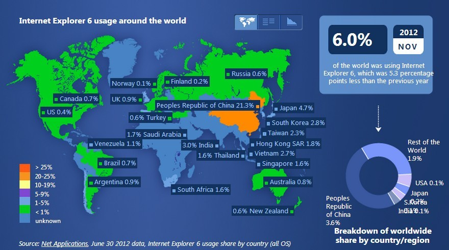
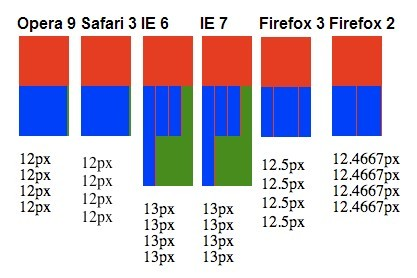
80%-90%用户的等待时间是来自于前端的页面加载
页面慢500ms 销售额下降20% - Google
页面慢100ms 销售额下降1% - Amazon
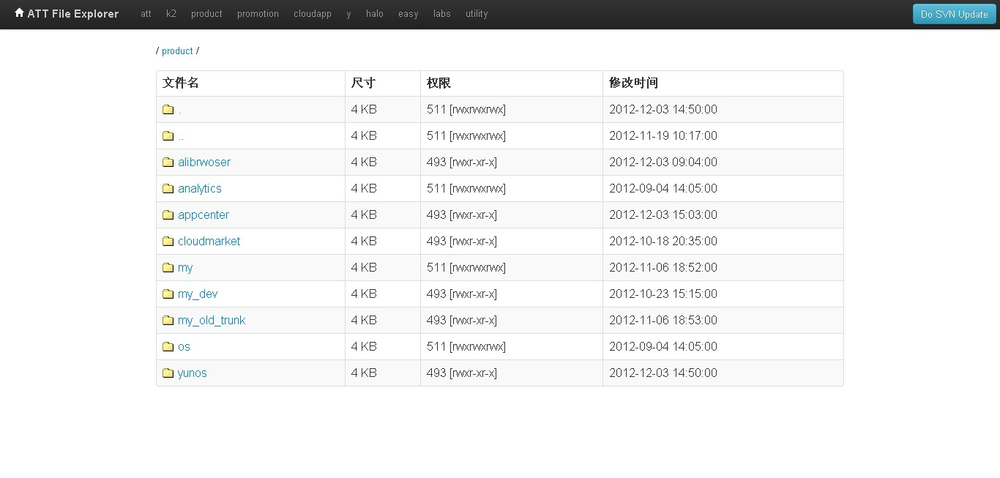
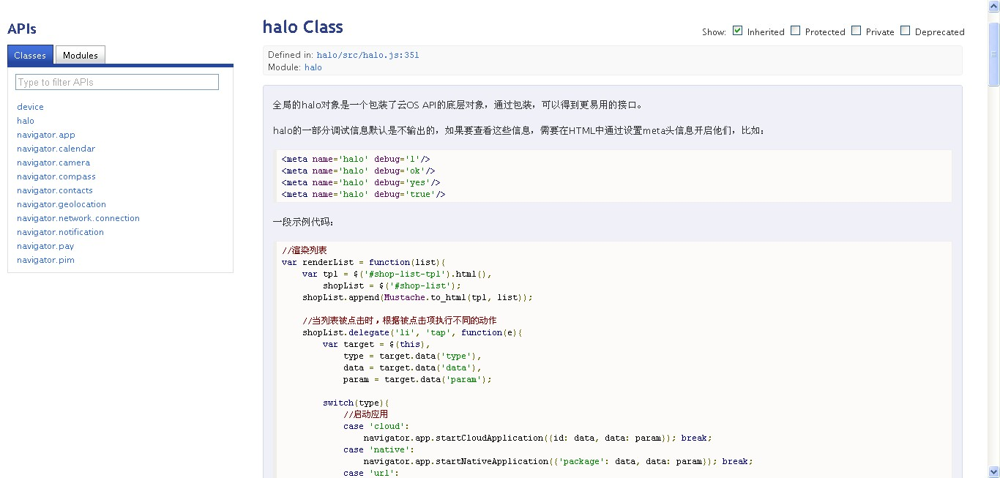
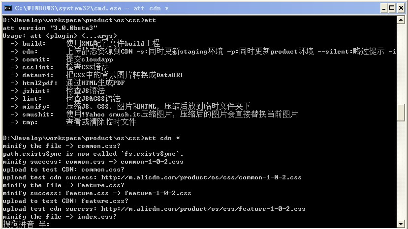
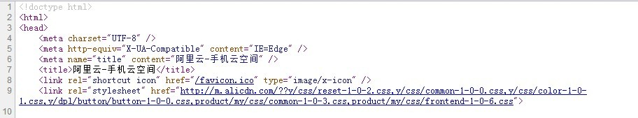
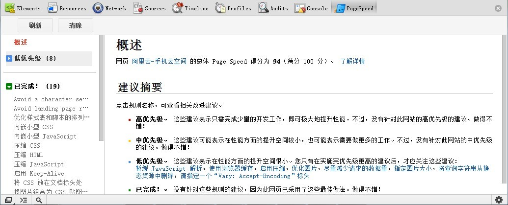